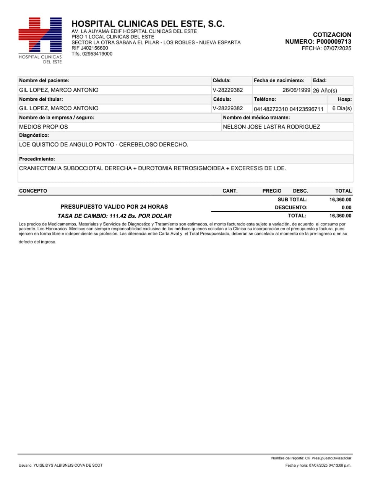
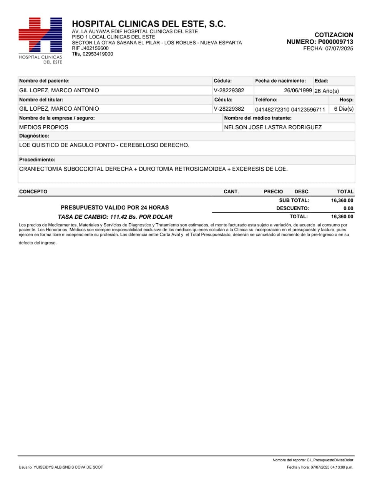

Donaciones
Binance
Correo: gllpz2699@gmail.com
Pay ID: 40662836
Zelle
Joseferminster@gmail.com
Aidacuffaro@yahoo.es
PayPal
Correo: Marc26antonio@gmail.com
Usuario: @MGilLopez
Bancos
Banco Venezuela
Cuenta: 0102-0144-68-00-00400545
Titular: Marco Antonio Gil López
C.I.: 28229382
Banesco
Cuenta: 1341104250001008720
Titular: Mariolgui Del Valle Lopez Marcano
C.I.: 12920712
Perfil Profesional
Mi nombre es Marco Gil y soy un Tec. Superior en Navegacion y Pesca con conocimiento de 3 idiomas (Español Nativo, Ingles B1 y Portugués Empírico) Tengo conocimiento y habilidades físicas con el manejo de herramientas para el trabajo de soldadura, refrigeración, mantenimiento y reparaciones. Con experiencia en barcos atuneros de palangre de pesca de atun. Alta disposición para faenas largas, excelente condición física y compromiso con el trabajo en equipo.
Actualmente estudiando Lic. Informatica
Experiencia Laboral
- Pasante – Buque "Goya III" MAY 2024–NOV 2024
- CONOCIMIENTO GENERAL DEL PUENTE DE MANDO Y FUNCIONAMIENTO DE LOS EQUIPOS.
- CONOCIMIENTO Y PRACTICA EN CUBIERTA A LA HORA DE PESCAR.
- CONOCIMIENTO GENERAL DE SALA DE MAQUINAS.
- CONOCIMIENTO DEL TRATAMIENTO DEL ATUN EN CUARTO FRIO.
- CONOCIMIENTO EN LA CAPTURA DE CARNADA Y TRATAMIENTO EN VIVERO
Certificaciones
- Cursos OMI(STCW)
- Certificado Médico Marítimo
- Certificado de Suficiencia
- Curso de refrigeracion (cava cuarto)
Galería
Contacto
📞 Teléfono: +58 412 359 6711
📧 Email: Marc26antonio@Gmail.com
📍 Ubicación: Margarita, Venezuela
🧭 Disponible para embarque inmediato
Informes Médicos
Información médica relevante:
- Certificados médicos actualizados
 
